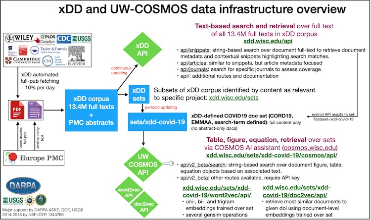

Synthesizing data from the published literature is critical to addressing a wide range of questions, ranging from the history and future of global biodiversity to the evolution of continental crust. Doing so manually, however, can be prohibitively time consuming and produces a monolithic database that is disconnected from primary sources that are difficult to fully cite.
We are building a scalable, dependable cyberinfrastructure to facilitate new approaches to the discovery, acquisition, utilization, and citation of data and knowledge in the published literature.
Formerly known as GeoDeepDive, xDD was renamed in order to clarify the core mission: We aim to enable extraction of dark data from scientific works which would otherwise remain unseen in the enormous volume of literature. The tools are agnostic to discipline and application framework, despite the implication of the prior "Geo" and "DeepDive" nomenclature.
This project wsa originally supported by the U.S. National Science Foundation EarthCube building block project (NSF ICER 1343760). Additional ogoing critical support is being provided by DARPA ASKE HR00111990013. Additional support is provided by the DOE and USGS. A through-going objective of all of these projects is to build a cyberinfrastructure that is capable of supporting end-to-end text and data mining (TDM) and knowledge base creation/augmentation activities in any domain of science or scholarship. xDD infrastructure includes the following key components:
Natural language analysis is critical to a variety of data and information location and extraction tasks. We deploy NLP software packages, including Stanford CoreNLP over our entire corpus. We are always seeking to deploy leading new tools for named entity recognition and other NLP tasks. Our campus CHTC infrastructure and xDD architecture enables us to rapidly deploy new tools and analyze the output for millions of documents.
Text embeddings (the mathematical representation of words, phrases, or entire documents as numerical vectors) provide powerful summarizations of the linguistic context and relationships of text within a corpus. The power of embeddings is that they are a learned representation of text that can provide basic question answering capabilities (i.e., similarity and analogy) and that is suitable as input for advanced machine learning approaches. We deploy a variety of embedding models over target document sets within xDD, providing a high-derived summary of the entirety of the corpus. Basic embedding results are available for document sets via the xDD API.
Scientific and other publications were made by humans for humans and they are rich in figures, tables, equations, and other visual elements that are not capture by text-only analysis. Our team have developed COSMOS, an AI-powered technical assistant that extracts and assimilates data from heterogeneous sources to accelerate analytics and knowledge discovery. COSMOS is a DARPA ASKE program innovation.
The following image provides a general overview of the xDD pipeline, with an empahsis on COSMOS endpoint. The processes starts on the left-hand side, with document fetching. Here, our secure servers fetch original documents from partner content providers. These documents, and associated bibliographic and link-back metadata, are stored on secure servers that have restricted access. Each content provider has its own mechanism of providing documents and our fetching system can be fine-tuned to accommodate the preferred rates specified by each provider, if applicable.
After obtaining original documents and associated bibliographic metadata, document data products are generated for key components of the xDD system, including the xDD API. Subsets of documents targeted towards specific research projects then pass into additional infrastructure endpoints, including the COSMOS AI technical assistant.
Every word and datum that can be derived from our infrastructure is fully traceable back to the original content provided by our partner publishers and organizations. Our terms of use require that useres provide full citation and, when relevant, URL links back to all of the original works that contributed data to an application or result. The xDD infrastructure can also be cited and we welcome new collaborations, both scientific and informatic.